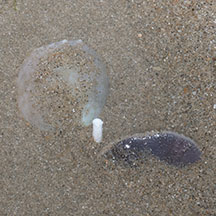
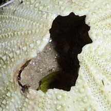

|
|
| shelled snails text index | photo index |
| Phylum Mollusca > Class Gastropoda |
| Helmet
and Bonnet snails Family Cassidae updated Jul 2020 Where seen? These large snails are rarely seen on our shores. These slow-moving carnivores are found half buried on large sand flats. Such areas are rare in Singapore as most shallow sandy areas have already been reclaimed. Features: The shell is usually helmet-shaped with a large body whorl and tiny spire. All have a small, elongated operculum made of a horny material. In Phalium, it is fan-shaped. |
 On top of a Cake sand dollar. Cyrene Reef, Aug 11 |
 Cyrene Reef, Aug 11 |
 Thick strong foot. Cyrene Reef, Aug 11 |
| What do they eat? They feed almost
exclusively on echinoderms, sea urchins or sea stars, mainly at night
and often while both predator and prey are buried in the sand. Snails
with heavy helmet-shaped shells eat sea urchins. The smaller Phalium feed on sand dollars. The Gladys Archerd Shell Collection describes their feeding technique: To feed on sea urchins, the helmet snail creeps up slowly, raises its heavy shell quite high, then abruptly drops the shell in such a way that the urchin is completely engulfed. Since urchin spines contain a poison, the helmet snail releases a paralytic enzyme from its salivary gland, then it secretes sulfuric acid sufficiently strong to dissolve the sea urchin shell in about 10 minutes before consuming its meal. Wow! According to Poutiers, the snail first squirts neurotoxic saliva over its prey to paralyse the spines. The snail is initially protected from these spines by the thick skin of the foot. Then, the snail pushes its snout through the unprotected anus, or through a hole rasped by radula in the test of the victim which may also be crushed under the weight of the snail. While the Seashells of New South Wales website says that most helmet shells live buried in the sand by day, coming out at night to feed on echinoderms, especially sea urchins, which they can locate by smell from at least 30cm away. They immobilise the urchin, crawl onto it with the thick skin of the foot providing protection from the spines, and make a hole in the urchin shell by an acidic secretion and by rasping with the radula, and suck out the soft parts. On our shores, the Grey bonnet snail has been seen on top of a Cake sand dollar, and when the sand dollar is examined, a hole is seen in the sand dollar skeleton. This suggests the snail bored the hole. |
 Half buried next to a Cake sand dollar. East Coast Park, Jul 15 |
 The 'burn' marks on the test of this recently dead sea urchin might have been made by a Helmet snail! |
 Changi, May 08 |
| Baby helmets: The snails have
separate genders and practice internal fertilisation. The shell of
the female is often larger. Eggs laid in large masses of numerous,
small horny capsules, forming irregular or cylindrical, tower-like
structures. Each capsule contains several hundred eggs, most of which
often serve as food for the developing embryos. The eggs hatch into
planktonic larvae or crawling juveniles, depending upon the species. Human uses: These snails are commonly collected for food and their large decorative shells are popular in the shell trade. Some of the larger species are used as raw material for lime or for cameo-carving. Status and threats: The Grey bonnet snail is listed as Endangered in the Red List of threatened animals of Singapore. |
| Some Bonnet snails on Singapore shores |
|
Changi, May 08 |

| Family
Cassidae recorded for Singapore from Tan Siong Kiat and Henrietta P. M. Woo, 2010 Preliminary Checklist of The Molluscs of Singapore. in red are those listed among the threatened animals of Singapore from Davison, G.W. H. and P. K. L. Ng and Ho Hua Chew, 2008. The Singapore Red Data Book: Threatened plants and animals of Singapore. Nature Society (Singapore). 285 pp.
|
Links
References
|